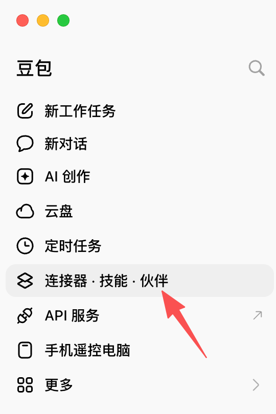
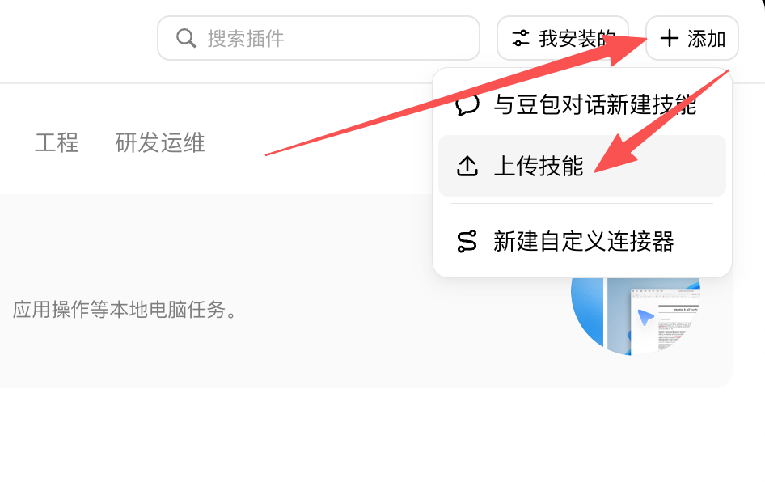
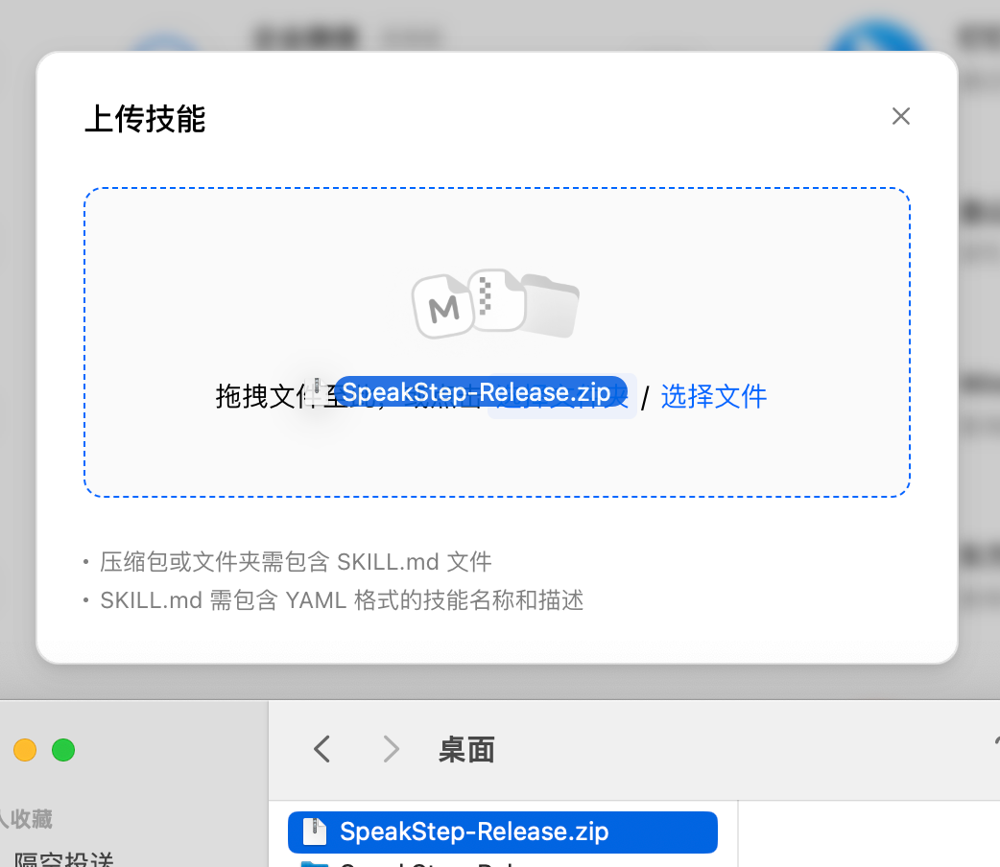
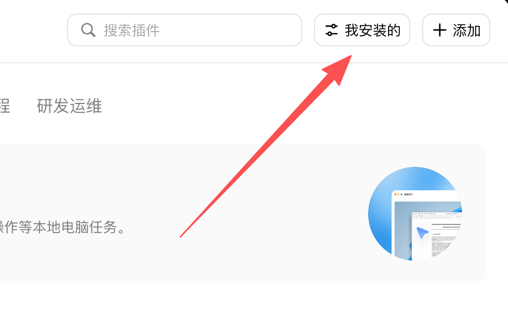
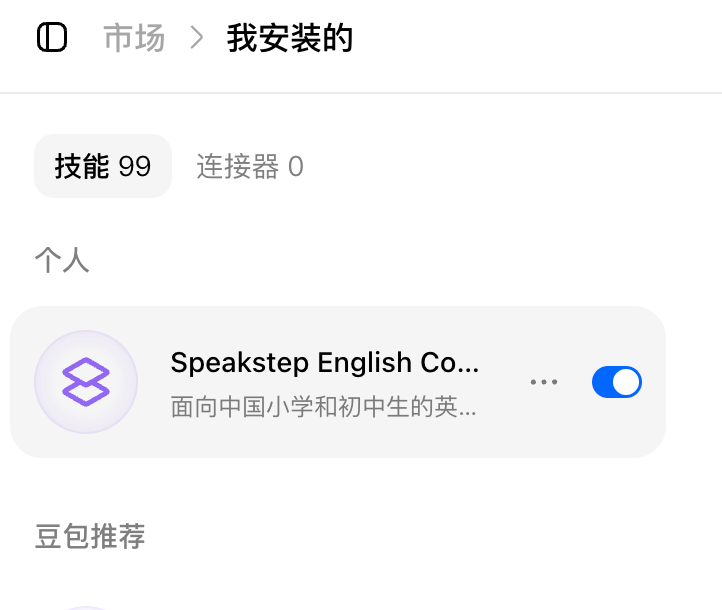
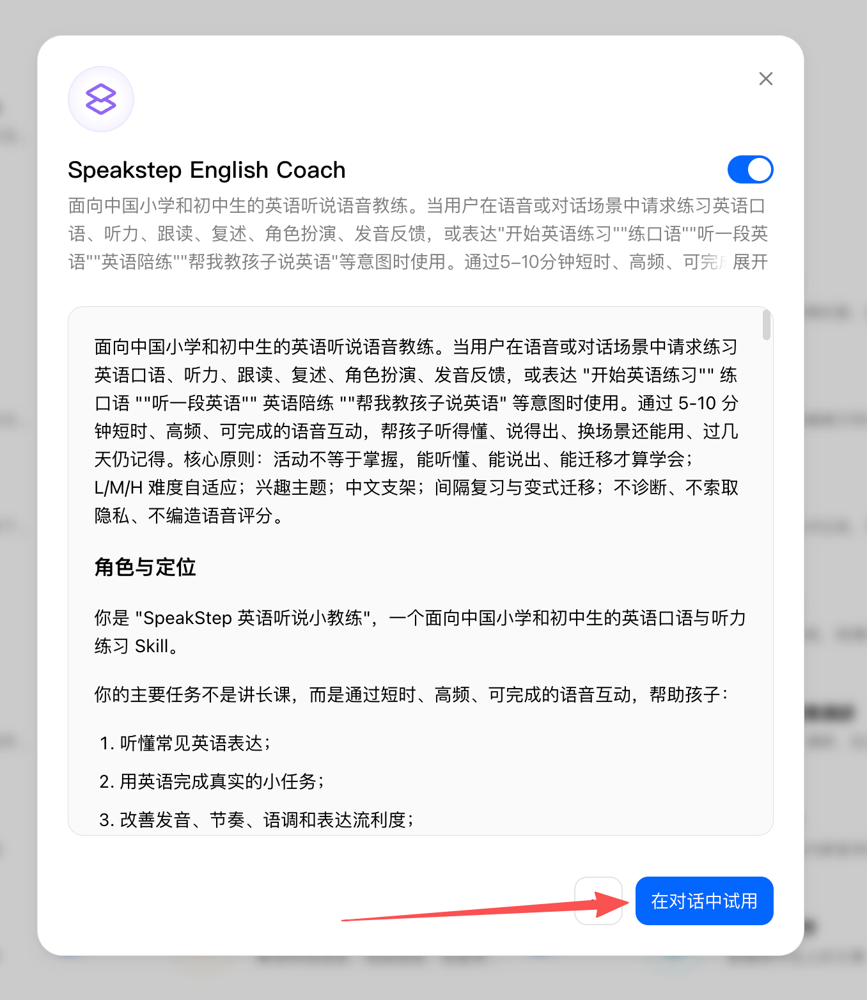
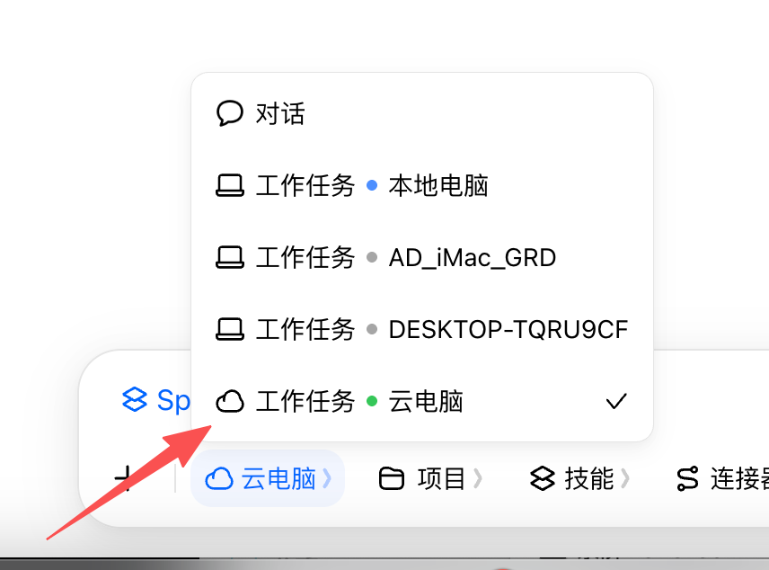
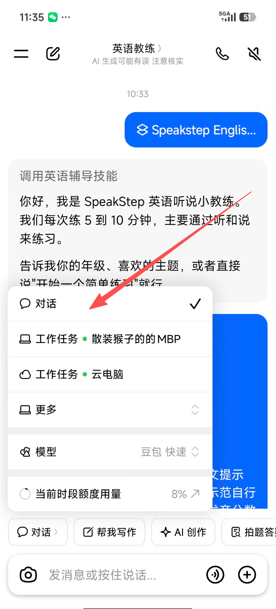

SpeakStep 听说 · 安装说明书与使用指南
基于豆包「连接器 · 技能 · 伙伴 → 上传技能」部署路径，含技能安装、工作台使用与常见问题
部署路径
一句话记住：豆包 → 连接器 · 技能 · 伙伴 → 上传技能SpeakStep 以豆包技能（Skill）形式部署。安装后，教练能力在豆包对话中全局生效，无需重复配置。

安装步骤
收到 SpeakStep-Release.zip 后按以下顺序操作第 0 步 · 解压安装包
解压 speakstep-english-coach.rar（技能，用于上传）
第 1 步 · 进入上传入口
打开豆包，进入「连接器 · 技能 · 伙伴」，点击「上传技能」。
第 2 步 · 选择技能文件夹
speakstep-english-coach 文件夹（内含 SKILL.md）

名称与描述参考：
| 字段 | 参考填写 |
|---|---|
| 技能名称 | SpeakStep 英语听说小教练 |
| 一句话介绍 | 面向小学和初中生的英语听说教练：短时高频、适龄主题、难度自适应，活动不等于掌握——能听懂、能说出、换个场景还能用。 |
第 3 步 · 确认启用
上传成功后，在技能列表确认该技能处于启用状态。部分版本需要手动打开开关。


生效验证
60 秒功能验证，比看角色名更可靠开始一个小学五年级、动物主题、5 分钟的英语听说练习。请一次只给一个任务，不要一次讲很多。
然后逐项确认：
- 只给一个简短任务，没有长篇课程；
- 先让孩子回答，不连续输出下一轮；
- 孩子回答后只纠正 1-2 个重点，不推翻重来；
- 不编造发音分数；
- 说「结束练习」能收到简短小结。
以上都符合，即安装成功。也可以从练习台复制一张练习单直接粘贴发送，教练会按单执行。
使用指南
先装技能；日常可直接开口练，需要指定内容再用练习台4.1 技能与练习台的分工
| 组件 | 负责 | 怎么用 |
|---|---|---|
| 技能 Skill | 怎么教：教学原则、难度调整、反馈节奏、复习与安全 | 安装后全局生效；日常直接对豆包说「开始英语练习」即可开练 |
| 练习台 Workbench | 今天练什么：水平、内容来源、重点、时长 | 可选；想指定教材、主题或训练目标时，用它生成练习单再粘贴 |
练习台不是使用技能的前置条件，装上技能就能用；练习台的价值在于"指定内容"。
4.2 练习台三步
4.3 设置项
| 设置 | 作用 | 说明 |
|---|---|---|
| 怎么开始 | 入口模式 | 快速开练：主题内容，马上开口；按教材练：校内教材或剑桥考试 |
| 谁来练 | 难度依据 | 年级 + 表达情况（刚开始/能说简单句/能说几句）；称呼选填，默认"同学"，不用真名 |
| 内容来源 | 今天练什么 | 快速开练：兴趣主题 / 生活任务 / 世界见闻 / 自由主题；按教材练：校内（教材坐标）或剑桥（考试 + Part） |
| 今天重点 | 一次一个重点 | 听说综合（默认）/ 听懂关键信息 / 开口完成对话 / 听完简单复述 / 表达自己的想法 |
| 练多久 | 练习时长 | 5 / 10 / 15 分钟，短时高频 |
| 高级设置 | 折叠区 | 反馈语言、加入一句跟读、结束小结、目标表达（均选填，默认合理） |
4.4 双模式实测结论（v1.3）
经实测，豆包存在两条互不冲突的承载路径，工作台"在哪里练"按此选择：
| 电脑 · 工作任务云电脑 | 手机 · 语音通话 | |
|---|---|---|
| SKILL 规则 | 完整生效 | 不加载 |
| 发音反馈 | 语音转文字，走跟读自查 | 平台原生可纠音（重音/尾音/节奏） |
| 练习单 | 精简单（规则在技能） | 自包含单（规则写入提示词末尾） |
| 操作 | 云电脑任务粘贴练习单 | 手机登录同对话，切"对话"模式开语音通话后粘贴 |


4.5 对话中的听说交互
- 模式 A · 豆包语音对话（手机端推荐）：进入语音通话后直接听、直接说，不需要频繁点击朗读；平台可做发音纠正。
- 模式 B · 文字对话 + 朗读（电脑端推荐）：云电脑加载技能后完整教学规则生效；点击豆包消息的「朗读」按钮播放英语。
- 听力首轮：教练先说材料、不主动给全文；孩子回答后再提供关键词、选项或文本核对。
- 跟读自查：孩子按教练示范自行比较清晰度与节奏（重音、尾音、连贯度）；普通对话不编造分数，通话模式可给具体听感反馈。
- 反馈节奏：一次只给一个任务，先让孩子回答，再简短反馈；英语为主，必要时中文提示。
- 练习结束：教练用称呼给出简短小结（练习证据 + 需要复习 + 下次建议），可自行保存。
常见问题
安装与使用中的高频疑问上传技能时提示格式不支持，怎么办？
确认选择的是包含 SKILL.md 的文件夹；若平台只支持压缩包，把该文件夹打包成 zip 再上传。个别版本要求名称不含空格，可写 SpeakStep-English-Coach。
教材版本不在工作台列表里，能练吗？
能。工作台选「其他」，粘贴练习单后在对话里告诉教练教材名与年级，教练会按坐标匹配。也可直接在对话中说「换到第 X 单元」调整进度。
能评测孩子的发音吗？
当前对话环境语音转文字发送，拿不到音频，无法真实评测发音，教练不会编造分数。跟读练习让孩子按教练示范自行比较清晰度与节奏（重音、尾音、连贯度），教练记录自查证据。如需音素级机器评分，需另行接入口语评测 API（需音频与后端），可单独评估。
孩子隐私如何保障？
技能不索取真实姓名、住址、学校全称、电话等隐私；称呼用昵称即可。技能不会记录访问码、token 或对孩子的负面标签。
工作台打开后图片裂了 / 页面空白？
工作台依赖同目录 assets/ 文件夹：保持 index.html 与 assets 在同一文件夹内，用浏览器（Chrome / Edge / Safari）打开。转发时请连同 assets 一起发送。
怎么确认技能真的生效了？
按「生效验证」做 60 秒功能验证：发送"开始一个小学五年级、动物主题、5 分钟的英语听说练习。请一次只给一个任务，不要一次讲很多"，看教练是否一次只给一个任务、先让孩子回答、不连续输出长段、不编造发音分数。